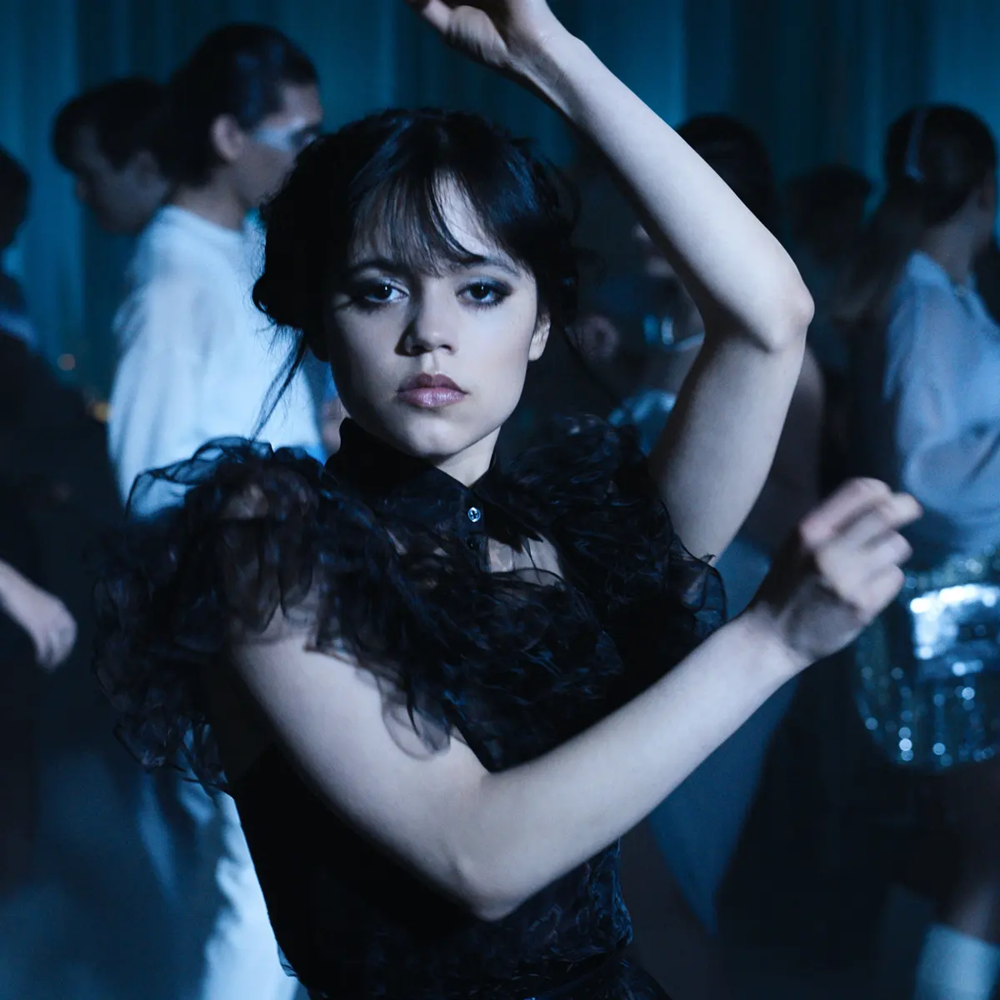

About Wednesday
Wednesday is a Witch who has visions about the past and present. She is an advocate for justice and truth in all matters. A woman knowledgable in many subjects and who shares her wisdom with the world
Wednesday and her goth style dance moves
Wednesday's Characteristics
- She is fearless
- She is very intelligent
- She is witty
- She is stylish
Wednesday's Friends
While Wednesday is independent, she does have a few friends. Her best friend is her pet hand , Thing. Her butler, Lurch, is a good friend as well. Click on the links below to read more about them.